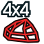

Silk ControlPoly4/fr
This documentation is not finished. Please help and contribute documentation.
GuiCommand model explains how commands should be documented. Browse Category:UnfinishedDocu to see more incomplete pages like this one. See Category:Command Reference for all commands.
See WikiPages to learn about editing the wiki pages, and go to Help FreeCAD to learn about other ways in which you can contribute.
|
|
| Emplacement du menu |
|---|
| Silk → ControlPoly4 |
| Ateliers |
| Silk |
| Raccourci par défaut |
| Aucun |
| Introduit dans la version |
| - |
| Voir aussi |
| Aucun |
Description
La commande  Silk ControlPoly4 permet de créer un polygone de contrôle à 4 points, un objet ControlPoly4, à partir d'une ou deux esquisses, mais peut également extraire des polygones à partir d'autres objets Silk. Elle est destinée à contrôler une courbe de Bézier cubique (et quatre d'entre elles contrôlent une surface de Bézier cubique).
Silk ControlPoly4 permet de créer un polygone de contrôle à 4 points, un objet ControlPoly4, à partir d'une ou deux esquisses, mais peut également extraire des polygones à partir d'autres objets Silk. Elle est destinée à contrôler une courbe de Bézier cubique (et quatre d'entre elles contrôlent une surface de Bézier cubique).

Un polygone de contrôle 3D constitué de deux esquisses de nœuds
Cette commande constitue la deuxième des trois étapes nécessaires à la création d'une courbe cubique de Bézier paramétrique :
- Créez une ou deux esquisses
- Créez un Silk ControlPoly4
- Créez un Silk CubicCurve_4


Esquisse → Polygone de contrôle → Courbe de Bézier obtenue
Utilisation
- Cet outil permet de créer différents objets dotés de propriétés et de modes de calcul propres, en fonction des éléments d'entrée sélectionnés :
- Mode 3L : sélectionnez un
 esquisse dans l'arborescence ou dans la vue 3D contenant une polyligne composée de 3 segments de droite.
esquisse dans l'arborescence ou dans la vue 3D contenant une polyligne composée de 3 segments de droite. - Mode 2N: sélectionnez deux esquisses de nœuds dans l'arborescence ou dans la vue 3D, chacune contenant un cercle et une droite partant du centre du cercle.
- Mode FirstElement : sélectionnez une esquisse dans l'arborescence ou dans la vue 3D contenant une combinaison arbitraire de différentes lignes. Seul le premier arc détecté dans l'esquisse est pris en compte, ou la première ligne droite s'il n'y a pas d'arc dans l'esquisse.
- Mode GridEdge : sélectionnez un point ou une ligne sur une arête d'un ControlGrid44 dans l'arborescence.
- Mode 2X4P: sélectionnez deux objets ControlPoly4 dans l’arborescence ou dans la vue 3D.
- Mode 2P: sélectionnez deux objets Point_onCurve dans l’arborescence ou dans la vue 3D.
- Mode 3L : sélectionnez un
- Il existe plusieurs façons de lancer l’outil.
- Appuyez sur le bouton
 ControlPoly4.
ControlPoly4. - Sélectionnez l'option Silk → ControlPoly4 du menu.
- Appuyez sur le bouton
- Selon le mode choisi, l'un des objets suivants est créé :
- ControlPoly4_3L
- ControlPoly4_2N
- ControlPoly4_FirstElement
- ControlPoly4_GridEdge
- ControlPoly4_2X4P
- ControlPoly4_2P
- Vous pouvez modifier les paramètres dans l'éditeur de propriétés.
Remarques
- Les polygones à 4 points de contrôle sont des objets de saisie obligatoires pour plusieurs autres objets Silk :
- L'un d'entre eux sert à créer un
 CubicCurve_4.
CubicCurve_4. - L'un d'entre eux, associé à deux objets
 Point_onCurve, sert à créer un
Point_onCurve, sert à créer un  ControlPoly4_segment.
ControlPoly4_segment. - 4 d'entre eux sont utilisés pour créer un ControlGrid44.
- Trois d'entre eux sont utilisés pour créer un

ControlGrid44_Rotate. - 2 de ces polygones de contrôle, associés à 2 objets
 ControlPoly6, sont utilisés pour créer un
ControlPoly6, sont utilisés pour créer un  ControlGrid64.
ControlGrid64.
- L'un d'entre eux sert à créer un
- La modification des esquisses sources mettra automatiquement à jour le polygone. Les courbes et les surfaces associées au polygone seront également mises à jour. Dans vos esquisses, veillez à définir la propriété VueHide dependent sur
false. Cela vous permettra de bénéficier de mises à jour en temps réel des polygones (ainsi que des courbes et des surfaces) pendant que vous modifiez les esquisses. - Étant donné que les polygones servent à créer aussi bien des surfaces que des courbes, et que ce sont les surfaces qui nous intéressent avant tout, la création de polygones est traitée comme une étape distincte. Il est important de se familiariser avec la manière dont un polygone contrôle une courbe. Après avoir créé une courbe ou une surface, modifiez les esquisses utilisées pour créer le polygone et observez comment la courbe ou la surface évolue.
- Les esquisses de nœuds sont destinées à être placées sur différents plans, de sorte que les polygones, courbes et arêtes de surface qui en résultent soient entièrement en 3D. Elles sont idéales pour se connecter aux extrémités d’esquisses de lignes situées sur des plans différents. Les esquisses de nœuds sont généralement créées avec le cercle à l’origine, puis l’esquisse est mappée vers un nouvel emplacement et une nouvelle orientation à l’aide des outils de mappage de FreeCAD (accessibles sous l’onglet « Données » de la vue des propriétés). De cette manière, le cercle n’est jamais modifié et l’extrémité libre de la ligne peut être ajustée librement.
- Un polygone utilisé dans une grille ou une surface peut être relié à d’autres esquisses, ce qui évite de devoir refaire tout le travail de création de la grille ou de la surface : il suffit d’échanger le lien vers l’esquisse et de recalculer (les liens vers les esquisses se trouvent également dans l’onglet « Données » de la fenêtre de propriétés).


Propriétés
Voir aussi : Éditeur de propriétés
Tous les objets ControlPoly4 sont dérivés de Part feature, ou plus précisément d’un objet Part::FeaturePython, et héritent de toutes ses propriétés. Ils possèdent également les propriétés supplémentaires communes suivantes :
Données
C2 - Outputs
- DonnéesLegs (
Part::PropertyGeometryList) : segments de contrôle. - DonnéesPoles (
VectorList) : pôles.
C3 - Identifiers
- DonnéesinternalName (
String) : nom interne permanent de cet objet dans FreeCAD. - Donnéesobject_version (
String) : version de la classe de cet objet.
Un objet ControlPoly4_3L possède également les propriétés supplémentaires suivantes :
Données
C1 - Inputs
- DonnéesSketch (
Link) : esquisse de référence. - DonnéesWeights (
Link) : poids. - Donnéesreverse (
Bool) : par défautFalse. Inverse le sens du paramètre. - Donnéestolerance (
Float) : par défaut1e-06. Tolérance de connexion point à point pour les 3 lignes.
C3 - Identifiers
- Donnéesobject_type (
String) : par défautControlPoly4_3L. Classe de l'atelier utilisée pour créer cet objet.
Un objet ControlPoly4_2N possède également les propriétés supplémentaires suivantes :
Données
C1 - Inputs
- DonnéesSketch0 (
Link) : esquisse de référence. - DonnéesSketch1 (
Link) : esquisse de référence. - DonnéesWeights (
FloatList) : poids. - Donnéesreverse (
Bool) : par défautFalse. Inverse le sens du paramètre. - Donnéestolerance (
Float) : par défaut1e-06. Tolérance de connexion point à point pour la ligne circulaire dans chaque nœud.
C3 - Identifiers
- Donnéesobject_type (
String) : par défautControlPoly4_2N. Classe de l'atelier utilisée pour créer cet objet.
Un objet ControlPoly4_FirstElement possède également les propriétés supplémentaires suivantes :
Données
C1 - Inputs
- DonnéesSketch (
Link) : esquisse de référence. - Donnéesreverse (
Bool) : par défautFalse. Inverse le sens du paramètre. - Donnéestolerance (
Float) : par défaut1e-06. Tolérance de connexion point à point pour les 3 lignes.
C2 - Outputs
- DonnéesWeights (
FloatList) : poids.
C3 - Identifiers
- Donnéesobject_type (
String) : par défautControlPoly4_FirstElement. Classe de l'atelier utilisée pour créer cet objet.
Un objet ControlPoly4_GridEdge possède également les propriétés supplémentaires suivantes :
Données
C1 - Inputs
- DonnéesEdge (
Integer) : arête sélectionnée de la grille (de 0 à 3). - DonnéesGrid (
Link) : grille de référence. - Donnéesreverse (
Bool) : par défautFalse. Inverse l'ordre des pôles. - Donnéestolerance (
Float) : non utilisé pour le moment.
C2 - Outputs
- DonnéesWeights (
FloatList) : poids.
C3 - Identifiers
- Donnéesobject_type (
String) : par défautControlPoly4_GridEdge. Classe de l'atelier utilisée pour créer cet objet.
Un objet ControlPoly4_2X4P possède également les propriétés supplémentaires suivantes :
Données
C1 - Inputs
- DonnéesPoly4_0 (
Link) : esquisse de référence. - DonnéesPoly4_0 (
Link) : esquisse de référence. - Donnéesreverse (
Bool) : par défautFalse. Inverse le sens du paramètre. - Donnéestolerance (
Float) : tolérance de connexion point à point pour la ligne circulaire dans chaque nœud.
C2 - Outputs
- DonnéesWeights (
FloatList) : poids.
C3 - Identifiers
- Donnéesobject_type (
String) : par défautControlPoly4_2X4P. Classe de l'atelier utilisée pour créer cet objet.
Un objet ControlPoly4_2P possède également les propriétés supplémentaires suivantes :
Données
C1 - Inputs
- DonnéesPoint0 (
Link) : premier objet « pointOnCurve » de référence. - DonnéesPoint1 (
Link) : deuxième objet « pointOnCurve » de référence. - DonnéesScale0 (
Float) : permet de mettre à l'échelle la tangente de départ (la somme avec Scale1 doit être inférieure à 3.0 ou à la longueur totale). - DonnéesScale0_abs (
Bool) : type de mise à l'échelle de la tangente de départ (False = relative, True = absolue). - DonnéesScale1 (
Float) : échelle la tangente de fin (la somme avec Scale0 doit être inférieure à 3.0 ou à la longueur totale). - DonnéesScale1_abs (
Bool) : type d'échelle de la tangente de fin (False = relative, True = absolue). - DonnéesWeights (
FloatList) : Poids. - Donnéesreverse (
Bool) : par défautFalse. Inverse le sens du paramètre. - Donnéestolerance (
Float) : non utilisé pour le moment.
C3 - Identifiers
- Donnéesobject_type (
String) : par défautControlPoly4_2P. Classe de l'atelier utilisée pour créer cet objet.